RegionalRubyKaigi レポート (80) 平成 Ruby 会議 01
初稿：2020-02-02
はじめに
令和元年の暮れに、平成 Ruby 会議 01 が開催されました。本記事はその開催レポートです。
2トラックのため全てのセッションは観れなかったのですが、執筆者が観に行くことのできたセッションについては感想も載せています。 また、セッションやイベントの感想については、執筆者個人の視点からのレポートとなっておりますので、あらかじめご了承いただければ幸いです。
平成.rb ってなに？
平成.rb とは、平成生まれの Ruby エンジニアで集まり、ステップアップしていきたいという思いで作ったコミュニティです。 普段の勉強会では LT 会とモブプロ会を交互に行っています。
※ 名前から色々と誤解されることもありますが、上の世代との壁は作らず、むしろ積極的な交流を推奨するコミュニティです。
詳しいコンセプトなどを知りたい方は平成.rb の方針をご覧ください。
開催概要
テーマ
令和元年の暮れに、平成生まれだけでなく、各世代で交流できるカンファレンスを開催する
開催日
2019-12-14（土）12:50 - 19:30
会場
キーノートや LT 以外は、会場を分けて 2トラックでやらせてもらいました。
主催
平成.rb
参加者
およそ 150名
公式サイト
https://heiseirb.github.io/kaigi01/
公式タグ
ツイートまとめ
平成 Ruby 会議 01 ツイート総集編 - Togetter
[Opening talk] 平成.rbってなに？
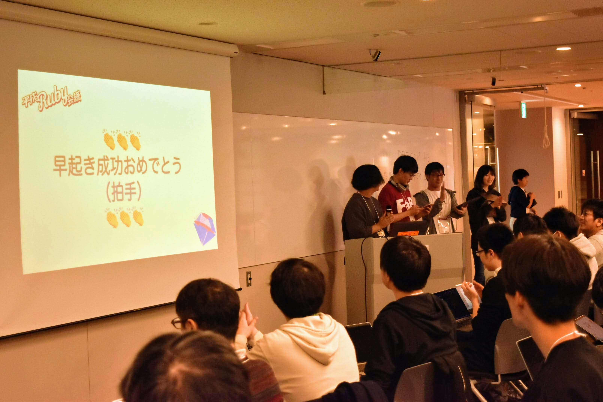
実行委員長の @tashiro_rb がオープニングトークをしました。
会場では平成世代にグッとくるプレイリストが流れていました。
[Keynote] What is expected?
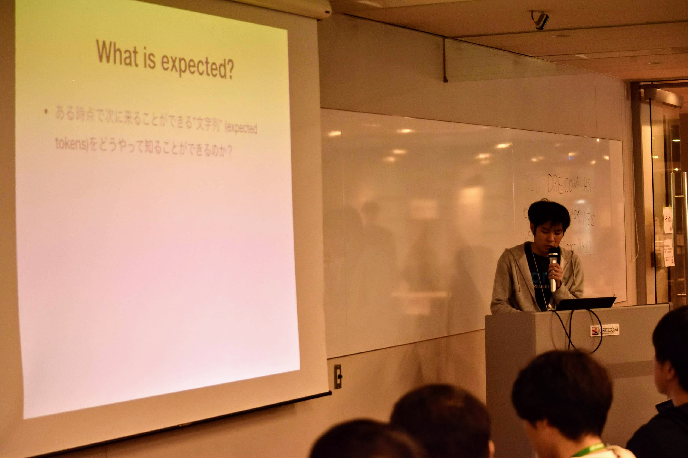
- 発表者: @yui-knk
- スライド: What is expected? - Speaker Deck
- ツイート: https://togetter.com/li/1451564
キーノートは @yui-knk さんの、Ruby の構文解析についてのお話でした。
しょっぱなからとても高レベルな内容で、事前にRuby のしくみを読んだことがあるとより楽しめそうでした。
また、キーノートの順番については以下のような思惑があり決まったそうです。
@yui-knk さんの keynote が top なのは、頭が未だ疲れ切っていない朝のうちにコアな話を入れておこうという策でした。@yui-knk さんに話したら笑ってくれました。
参照：平成 Ruby 会議 01 をおえて｜tashiro｜note
[Track A]
Ruby 2.7 ISeq バイナリ表現の改善について +α
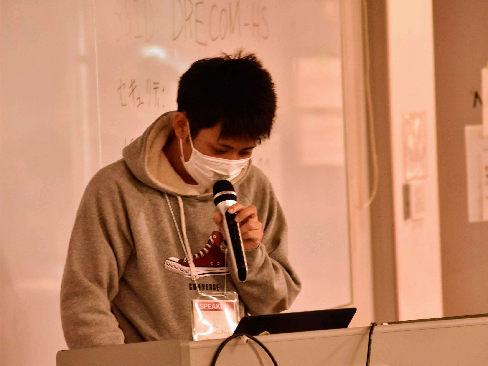
Cookpad インターン生 @NagayamaRyoga さんの発表です。
Rails アプリケーションの起動を高速化するために行った取り組みが興味深かったです。 ISeq のシリアライズは C で実装されているため、C でどのように実装していったのかを図解付きで詳しく説明されていました。
あなたのその gem、Windows でも動きますか？
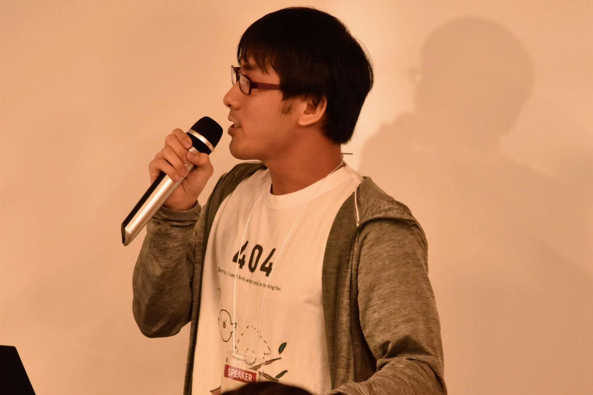
- 発表者: @unasuke
- スライド: heiseirubykaigi-1 - unasuke - Rabbit Slide Show
- ツイート: https://togetter.com/li/1451570
トラック A の司会進行でもある @unasuke さんの発表です。
Middleman 本体に PR を出した際に、Windows での挙動を確認されたことから、Windows でも Gem が動くようにする取り組みについてのお話です。 「みなさんが最初に触った OS は？」というアンケートで、Windows が多かったのが印象的でした。なつかしいですね。
ActiveSupport::Concern で開くメタプログラミングの扉

- 発表者: @expajp
- スライド: ActiveSupport::Concern で開くメタプログラミングの扉 / The door of meta-programing is opened by ActiveSupport::Concern - Speaker Deck
- ツイート: https://togetter.com/li/1451571
新規プロジェクトのリードエンジニアになるために
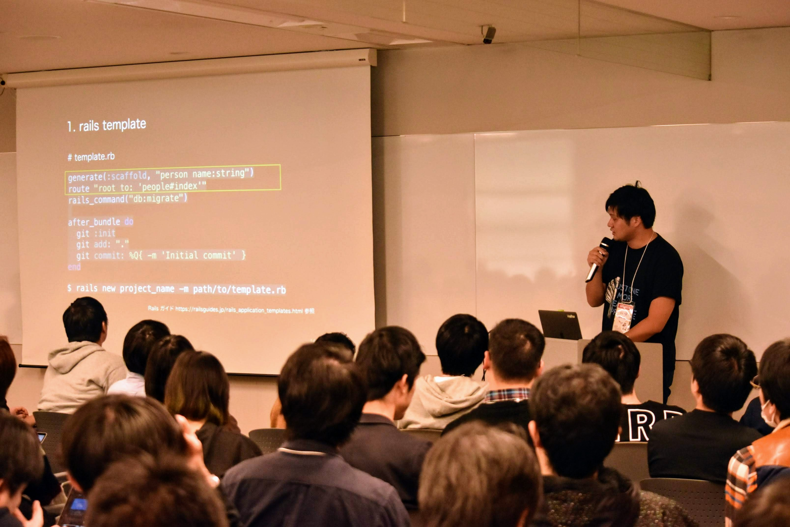
- 発表者: @hotatekaoru
- スライド: 新規プロジェクトのリードエンジニアになるために - Speaker Deck
- ツイート: https://togetter.com/li/1451575
平成.rb でおなじみ、メドピアの @hotatekaoru さんの発表です。
「なんでリファクタリング好きなんだろう？」という問いから始まり、メタ的な思考から実際に行ってみた内容をみることができ、納得感がある発表だなと思いました。 新規プロジェクト立ち上げの際に大いに参考になりそうな rails template が気になりました。
Proc のススメ
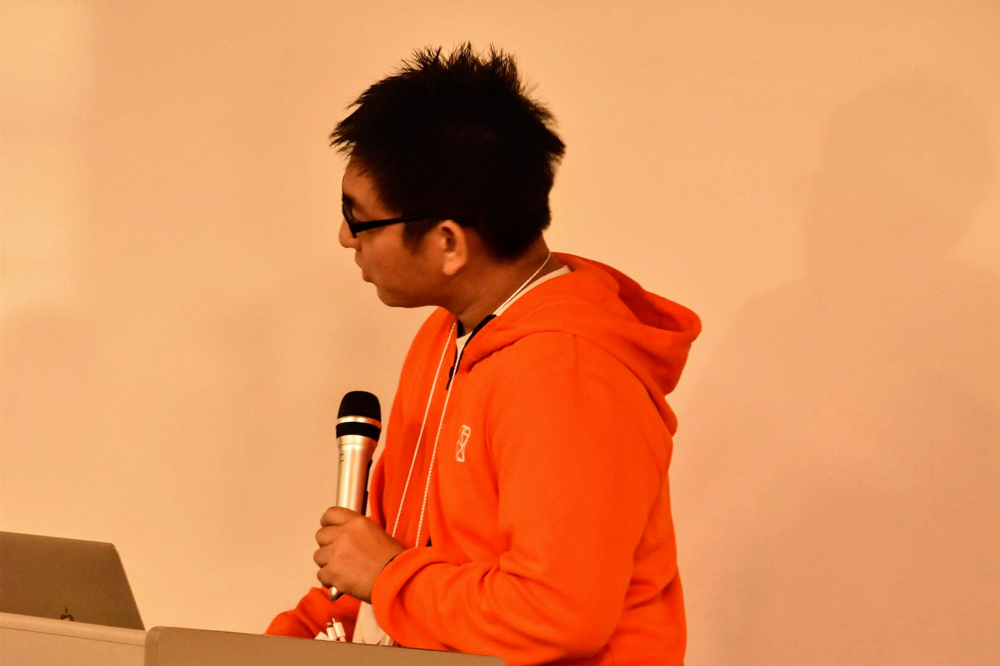
- 発表者: @sanfrecce-osaka
- スライド: Proc のススメ / recommendation-of-proc - Speaker Deck
- ツイート: https://togetter.com/li/1451577
このセッションの次の時間に、モブプロを行いました（後述）
逃げちゃダメだ！既存プロダクトに RSpec を導入していく戦い

- 発表者: @ryamakuchi
- スライド: 逃げちゃダメだ！既存プロダクトに RSpec を導入していく戦い
- ツイート: https://togetter.com/li/1451580
本レポートを書いた @ryamakuchi の発表です。
テストカバレッジが 5% の既存プロダクトに立ち向かうという内容のお話です。 後日談ですが、このあとカバレッジが 20% を超えました（転職する前に 20% を超えて、本当に良かったです）
Ruby 力を上げるためのコードリーディング

階層的クラスタリングを Ruby で表現する
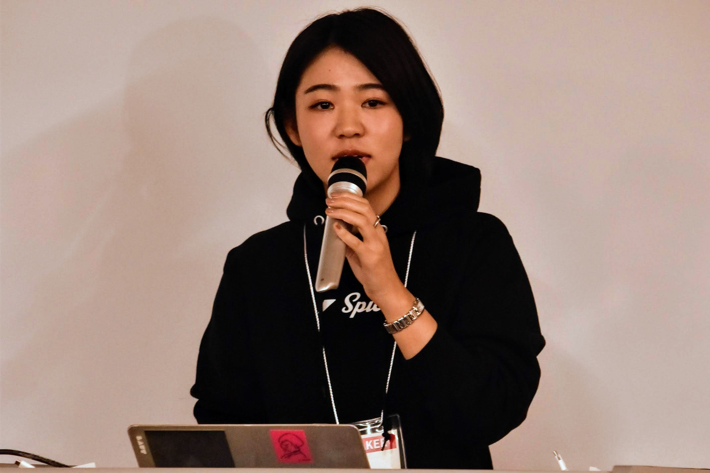
- 発表者: @ayumitamai97
- スライド: 階層的クラスタリングを Ruby で表現する / Implement Hierarchical Clustering Analysis Using Ruby - Speaker Deck
- ツイート: https://togetter.com/li/1451586
@ayumitamai97 さんの「階層的クラスタ分析を Ruby で実装してみる」という、個性的でおもしろそうな発表です。
階層的クラスタリングの概要から始まり、平成の邦楽ヒット曲の歌詞を使って分析を行うという、平成 Ruby 会議らしいとてもエモい内容でした。 サンプルコードはこちらの GitHub に置いてあります。
ayumitamai97/hierarchical-analysis-ward-method: 2019/12/14 平成Ruby会議セッションで使用したコード（前処理+ウォード法）
Play with Ruby

- 発表者: @Sean0628
- スライド: Play with Ruby - Speaker Deck
- ツイート: https://togetter.com/li/1451587
真の REST
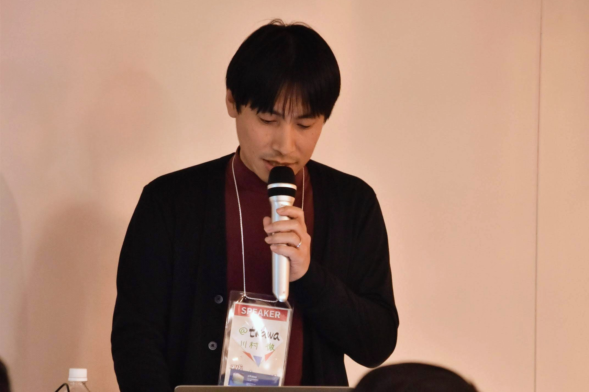
- 発表者: @tkawa
- スライド: 真の REST
- ツイート: https://togetter.com/li/1451589
[Track B]
Textbringer でつくる Textbringer

- 発表者: @shugo
- スライド: heiseirk01/README.md at master · shugo/heiseirk01
- ツイート: https://togetter.com/li/1451704
※ 当日のプレゼンテーションは Textbringer を使って行われました
SimpleDelegator 活用のご提案
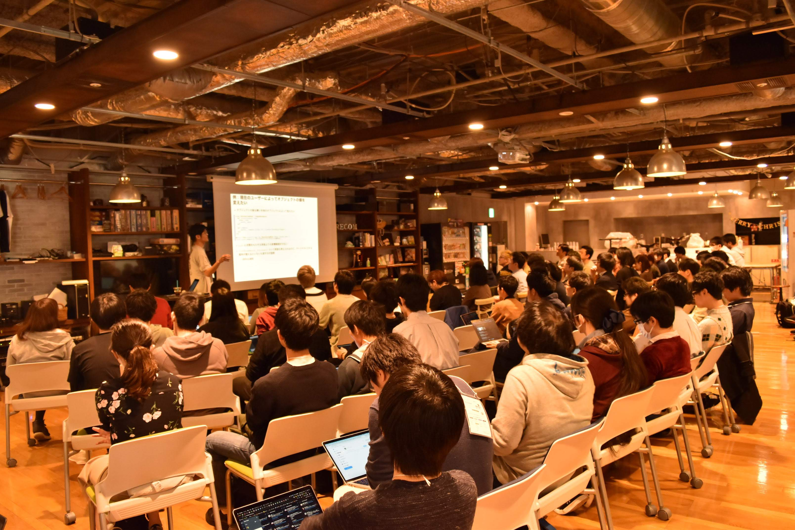
Ruby on Jeeeeeeeeets!! ✨🚀✨
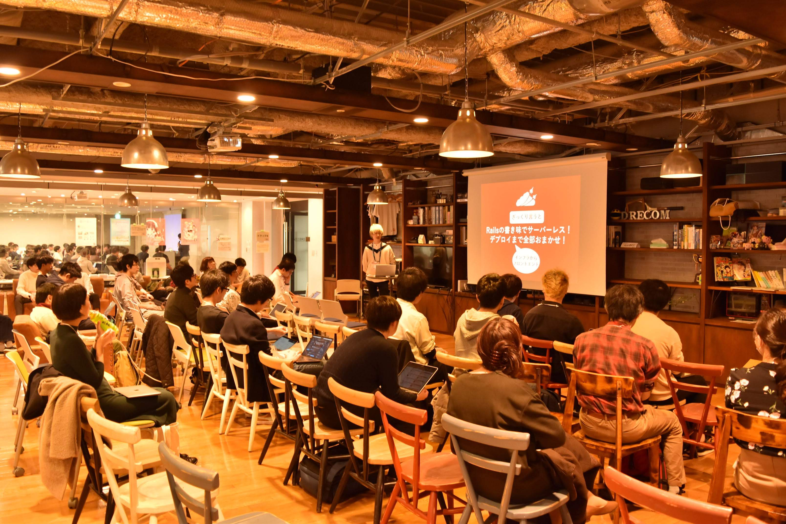
- 発表者: @AquaLamp
- スライド: Ruby on Jeeeeeeeeets!! ✨🚀✨ - Speaker Deck
- ツイート: https://togetter.com/li/1451714
Jets に詳しい管理栄養士の @AquaLamp さんによる発表です。
セッション時のスライドのアニメーションが死ぬほどキレイで、しかもパワポで作ったと聞いてびっくりしました。 Jets が Rails に似ていること、なおかつサーバーレスに異世界転生！クラウド無双… という具合にパワーワードが頭から離れない、良いセッションでした。
Async / Await functions in Ruby

- 発表者: @sat0yu
- スライド: Async / Await functions in Ruby - Google スライド
- ツイート: https://togetter.com/li/1451718
既存 RailsApplication の高速化
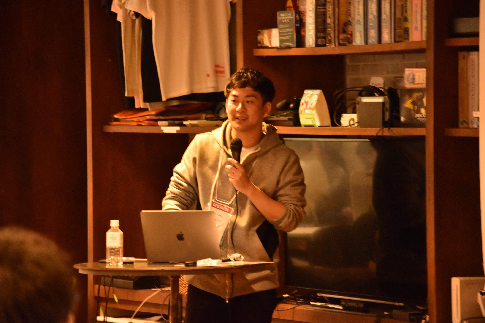
平成.rb オーガナイザーである @cobafan さんの発表です。
既存の Rails アプリケーションを高速化するために、CI などで適切なコードの書き方になっているかをチェックできるような Gem を作っている、という内容でした。 セッション後の質問タイムで実装で困っていることの解決法を募ったところ、@pocke さん達が解決法のアイディアを出していて、つよい… となりました。
Ruby で JVM を実装してみる

- 発表者: @daikimiura
- スライド: Ruby で JVM を実装してみる / Implement JVM with Ruby - Speaker Deck
- ツイート: https://togetter.com/li/1451722
@daikimiura さんの発表です。モブプロの裏番組でしたが、タイトルの通りおもしろそうな発表でたくさん人が集まっていました。
Go や Rust や PHP で JVM を実装している人たちにインスパイアされ、Ruby でも実装できるはず！と、思い作ってみた、という内容です。 クラスファイルを読み取り、書いてある命令を実行する箇所の解説が、JVM の仕様を少し知れた良い機会になりました。
daikimiura/merah: merah is a JVM implementation by Ruby
トラック A でモブプロをやっている間、トラック B は休憩所に。
お父さんに連れられて、小学校 2年生の小さいお子さん（最年少！）も参加していました。

Good to know yaml
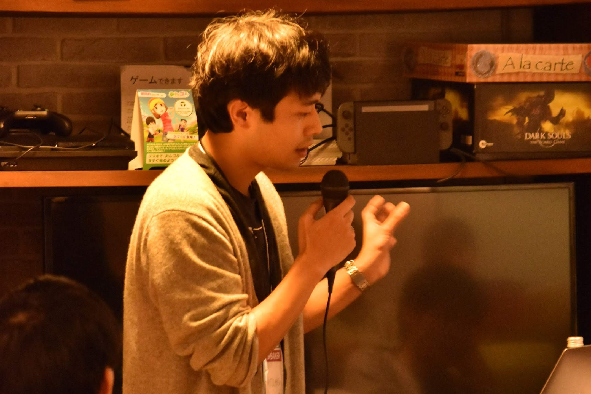
- 発表者: @MITSUBOSHI
- スライド: Good to know yaml - Speaker Deck
- ツイート: https://togetter.com/li/1451725
Rust で gem を作ろう

- 発表者: @atomiyama
- スライド: Rust で gem を作ろう - Speaker Deck
- ツイート: https://togetter.com/li/1451726
やわらか増税

- 発表者: @ikaruga777
- スライド: yawaraka zouzei - Speaker Deck
- ツイート: https://togetter.com/li/1451731
ActiveRecord の pluck メソッドがおかしな挙動をしたので調べてみた
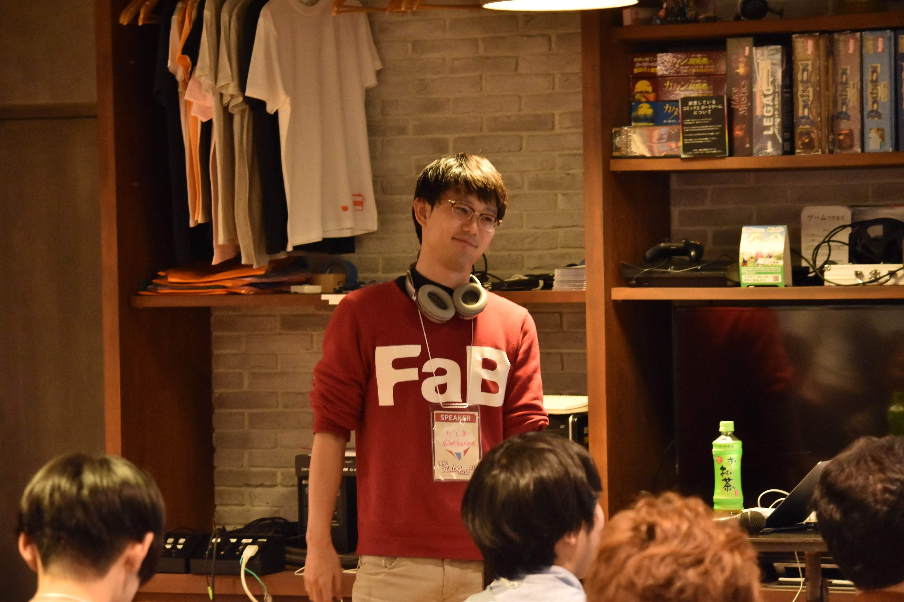
- 発表者: @mtkasima
- スライド: 平成Ruby会議01.pdf - Speaker Deck
- ツイート: https://togetter.com/li/1451734
平成.rb オーガナイザーでトラック B の司会進行 @mtkasima さんの発表です。
途中でおかしな挙動をしている pluck の実装を追うために、ActiveRecord の中身を追うライブコーディングが始まったのが観ていて楽しかったです。 そして最後に、pluck_for_kasima というメソッドを爆誕させていたのが、とても彼らしいエンタメ性あふれる発表でした。
Regression Test for RuboCop

- 発表者: @pocke
- スライド: Regression Test for RuboCop: 平成Ruby会議 - Google スライド
- ツイート: https://togetter.com/li/1451736
RuboCop コアチームメンバーである @pocke さんの発表です。
RuboCop はこわれやすい。なぜ Regression test が必要か、そして Regression test の仕組みについてから説明していただきました。 実際に Regression test をしてみて RuboCop やプラグインのバグを見つけよう、というところがワクワクするような内容でした。
[Track A] モブプログラミング
モブプロってます！#heiseirubykaigi pic.twitter.com/PXnrbswvps
— かしま (@mtkasima) December 14, 2019
平成.rb の勉強会では、普段 LT 会とモブプロ会を交互に行っています。
普段の勉強会の様子を体験してもらえるようなコンテンツを用意しました。
- A コース（Enumerable 再実装コース）
- B コース（OSS チャレンジコース）
Enumerableの再実装、意外と苦戦したけどなんとかできて楽しかった！#heiseirubykaigi
— 藤井裕起@マネーフォワード (@yuki_fujii_mf) December 14, 2019
それぞれ楽しくモブプロに熱中していただけたようで良かったです！普段の勉強会にもぜひいらしてください 🙌
スポンサー LT
今回、各スポンサー様には多大なご協力をいただきました。皆さま本当にありがとうございます。
株式会社ドリコム - 会場スポンサー
平成Ruby会議でスポンサーtalkさせていただきました
— おーはら (@ohrdev) December 14, 2019
会場/協賛にお困りの方いらっしゃったらお声がけくださいhttps://t.co/l27RA3AJWF#heiseirubykaigi
ストアーズ・ドット・ジェーピー株式会社 - クリエイティブスポンサー
企業LTでつかった資料です！地域コミュニティを一緒に盛り上げていけたら嬉しいです💃https://t.co/UwJmiuUbuK#heiseirubykaigi #heying
— Mana Kondo (@_mkondo) December 14, 2019
株式会社タイミー - スタッフスポンサー
ワーカーさんが（僕と一緒に）設営や受付業務を手伝わせていただくスポンサーをいたします。
— かめいけ (@kameike) December 12, 2019
平成.rbのコミュニティメンバーの方々が一人でも多くキーノートやコンテンツを見ることができればと思い協賛しております〜！！ https://t.co/CFY48M6yxk
楽天株式会社 - コーヒースポンサー
色々大変だったけど、楽しかったです☕️
— はっせー (@Dear_you_cry) December 16, 2019
平成Ruby会議にてコーヒースポンサーを行いました！ | 楽天株式会社ラクマ事業部 by 焼山 里佳子 https://t.co/qjT65D82E2 #wantedly
スマートキャンプ株式会社 - ドリンクスポンサー
かきました。スポンサーとしての参加でしたが、一般参加者としてもめちゃくちゃ楽しかったです！！ありがとうございました！ #heiseirubykaigi
— はぜ (@haze_it_ac) December 15, 2019
平成Ruby会議 01 にドリンクスポンサーとして参加しました - SMARTCAMP Engineer Blog https://t.co/mdc2N2ITHn
株式会社オプト - フードスポンサー
本日はこちらでフードスポンサーをさせていただきます！
— オプトテクノロジーズ (@OptTechnologies) December 14, 2019
ステッカーも配布しているので是非！#heiseirubykaigi https://t.co/eYTghVZY5T
メドピア株式会社 - ドリンクスポンサー
本日の平成RubyKaigiのLT資料です！ 頑張ってPRマージされるまで行きたい #heiseirubykaigi #heiseirubykaigiAhttps://t.co/FSUP0FmCnC
— Teruhisa Fukumoto💎 (@terry_i_) December 14, 2019
株式会社 SmartHR - フードスポンサー
SmartHR 会社紹介資料です！https://t.co/lC4E690kDM
— Masafumi Kabe (@kabetch_) December 14, 2019
#heiseirubykaigi
株式会社マチマチ - フードスポンサー
はてなブログに投稿しました！ #heiseirubykaigi にフードスポンサーとして参加した感想です！
— ぱん🍞 (@nappan23) December 17, 2019
平成Ruby会議01にフードスポンサーとして参加しました - マチマチ技術ブログ https://t.co/cxpbwKUi3J #はてなブログ
飛び込み LT
当日飛び込み LT を募集したところ、なんと 3人も応募がありました！ありがとうございます 🙏
どの発表も飛び込み LT とは思えないほどのクオリティで、かなり盛り上がりました。
OSS で結果を出す方法
今日の資料です！
— Akinori MUSHA (@knu) December 14, 2019
「OSSで結果を出す方法」https://t.co/5WwDFaHxcK #heiseirubykaigi
めちゃくちゃいい話がガンガンされているが時間が足りないｗ #heiseirubykaigi
— 黒曜@デレ7thナゴド両日現地 (@kokuyouwind) December 14, 2019
Ruby と Lisp の切っても切れない関係
pixivFANBOXでRubyとLispの切っても切れない関係 #heiseirubykaigi を公開しました！ https://t.co/KuwY22p4AF
— ゴルフ場デベロッパー (@tadsan) December 14, 2019
tadsanのLT、Emacs愛がすごかった。そして疾走感がすごかったw #heiseirubykaigi
— igaiga (@igaiga555) December 14, 2019
TECH::EXPERT で学んだこと
飛び込みLTできることになった#heiseirubykaigi
— ゆーすけ@TECH::EXPERT 59期 就活中 (@YKhojo) December 14, 2019
スクールの達成度と受け入れる側の期待値が一致できると、みんな幸せになれそう。
— まどぎわ (@madogiwa_boy) December 14, 2019
#heiseirubykaigi
[Keynote] Breaking Change

- 発表者: @koic
- スライド: Breaking Change - Speaker Deck
お待ちかね最後のキーノート、@koic さんの発表です！
始まる前、会場の雰囲気がアツくなってきたのが分かりました。内容も、安定の @koic さんらしい発表でした。
全体を通して、OSS や破壊的変更について改めて再認識するような内容だと感じました。 「不便だと思ったら提案すれば良い」など、これが正しいふるまいだよね、と思えたり、そこに対する解決方法がエンジニアらしいな、と、とても学ぶことが多かったです。 あと RuboCop を使って破壊的変更に対して分かりやすく警告を出そう、という取り組みが、なかなか RuboCop ハックしていてすごかったです。
そして、最後の「あなたがコミュニティ」には、会場にいたみんなが 2020年に向けてやっていこう！と感じたのではないでしょうか。RubyKaigi 2020 も楽しみです！
懇親会

お疲れ様でした！
— シロ (@shiroemons) December 14, 2019
学んだことも沢山あって、知り合いにも会えて、本当に楽しいイベントでした。
お寿司🍣、ハンバーガー🍔、お酒🍺
スポンサーの方々、運営やボランティアスタッフの方々、スピーカーさん楽しいイベントをありがとうございました！
#heiseirubykaigi pic.twitter.com/utF99xu2oC
ハンバーガーや寿司がデプロイされ、みんなで楽しく懇親会をしている様子です。
実は、懇親会ではこっそりぼっちパトロールをしていたのですが、なんとぼっちはひとりもいませんでした。こういう懇親会を継続していきたいです。
みんなそれぞれ好きに集まって会社の話をしたり、メタプログラミング反省会をしたりと、いつもの楽しい懇親会でした。 帰り際には「蛍の光」を BGM で流して、無事、〆のラーメンを食べに解散しました。
まとめ
平成 Ruby 会議 01 は、運営メンバー・スポンサーの皆さま、そして、参加者の皆さまのおかげで、勢いのあるすばらしいイベントとなりました！圧倒的感謝です。
全体を見ていただくと分かるとおり、とてもレベルの高い内容が盛りだくさんとなっています。
今回の平成 Ruby 会議の裏テーマは、「つくる側とつかう側の両方を知る」ことだと感じました。
つくる側がどんな気持ちで実装しているのか、つかう側はどんなことを考えながらプログラミングしているのか、両方の視点から色々なセッションをみることができたと思います。
今回の Keynote やセッション、LT をみて、
「OSS コミットへの機運が高まった！」
「普段なかなか潜れない、深いところまで知ることができた！」
という方が多かったのではないでしょうか？
この刺激を大事にして、2020年もみんなでやっていきしたいと思います！
あわせて読みたい
運営スタッフもイベントについて詳しく紹介しています。ぜひご覧ください。
- 平成Ruby会議01をおえて｜tashiro｜note
- 実行委員長の @tashiro_rb が書いた総まとめ記事です
- 平成Ruby会議01を終えて｜cobafan｜note
- オーガナイザー兼スピーカーの @cobafan が書いた記事です。運営側からみた平成 Ruby 会議についてです
また、参加者の方々にもブログレポートを書いていただきました。すべては紹介しきれないのですが、いくつかピックアップしましたのでぜひこちらもご覧ください。
- 平成Ruby会議に参加してきました！ - 宮水の日記
- 『平成Ruby会議』に行ってきたよメモ - コード日進月歩
- 平成Ruby会議01に参加しました - @znz blog
- 平成Ruby会議01 に参加してきました #heiseirubykaigi - Smoky God Express
著者について
rry（@ryamakuchi）: 2020年 1月〜 STORES.jp で Rails エンジニアをやります（ちょうど転職したてです）
平成 Ruby 会議の運営にジョインしたのは 10月頃からで、これまで運営陣のパワフルな活動に支えられてきました。みんないつもありがとう！今年もよろしくお願いします。